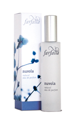
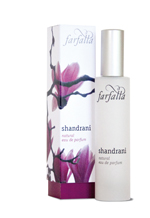
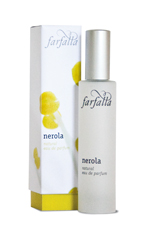
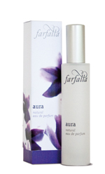
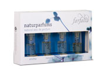

|
Anima
A fragrancethat can bring out yoursoul’s hiddensmile! Profound, dynamic and, at the same time, fruity with refreshing notes of grapefruit, mandarinandorange. The heart contains sunnynotes ofmimosa and orange blossoms, rounded off by precious woods and benzoin. |
Nuvola 
Enjoy the feeling of walking on air when wearing this scent! Nuvola, meaning “cloud” in Italian, is said to make men’s heads not only turn but spin. Fresh and multi-faceted at first, the heart note then becomes very feminine and powdery. In this natural perfume, neroli, bergamot, ylang, ylang, vanilla and sandalwood emphasise the attraction and charm of the wearer.
|
Shandrani 
Be carried into a magical Arabian night with the mysterious and alluring scents of fragrant blossoms!
Experience the tender sensuality unveiled by the captivating fragrances of polianthes tuberosa, jasminum sambac and attar of roses which form the dominant notes. Cloves cardamom and spikenard give the perfume its spicy depth. The soft and powdery base consists of osmanthus, vanilla and sandalwood.
| Nerola 
A fruity fragrance stimulating springtime feelings! Nerola, a Sicilian princess, loved the scent of orange blossoms beyond all measure. The mellow flowery scent of this natural perfume is as delicate as spring and has an invigorating and mood-enhancing effect. Neroli, precious lemon balm, powdery iris, and attar of roses are only a few of the fragrances that make up this beautiful natural perfume.
|
Aura
A very special perfume for those wishing to set clear, protective boundaries!
The top note has an invigorating effect with its light citrus scents and the tangy freshness of some sweet grasses. Soft floral fragrances form the middle note, while the base notes are green and earthy. Angelica, chamomile, incense and Swiss pine round off this scent.
|
Mini Spray Set
All four natural perfumes for women
(Shandrani, Nerola, L’Amour und Aura) as mini spray.
 |